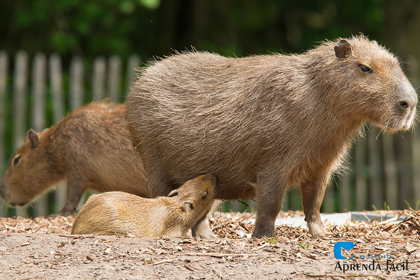

O dia internacional das capivaras é dia 14 de setembro, as capiavaras tem dia internacional! Uma curiosidade sobre as capivaras é que elas são mais ativas no final do entardecer inicio da noite. Elas ficam acordadas a noite inteira e dormen durante o dia,em águas rasas com lama ou na vegetacão densa para se esconder de predadores. elas são animais roedores, apesar de parecer indefesas e calmas elas são bastante agressivas se você se aproximar dos filhotes delas. 000
